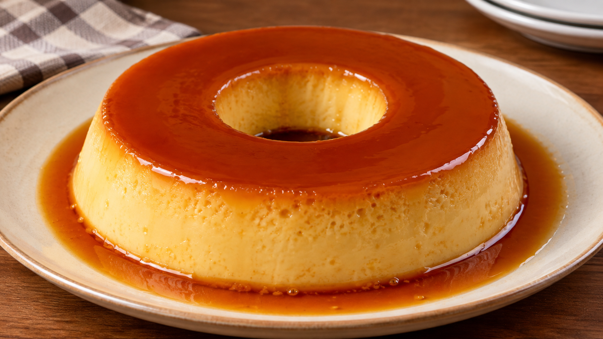

Como fazer um Pudim de Leite Tradicional?

Lista de Ingredientes
Para a calda
- 1 xícara (chá) de açúcar
- ½ xícara (chá) de água quente
Para o pudim
- 1 lata ou caixa (395 g) de leite condensado
- 2 medidas (da lata ou caixa) de leite integral (aproximadamente 790 ml)
- 3 ovos inteiros
Modo de Preparo
1. Prepare a calda
- Em uma panela, coloque o açúcar.
- Leve ao fogo médio até derreter completamente e adquirir uma cor dourada.
- Adicione a água quente com cuidado, mexendo até formar um caramelo liso.
- Despeje a calda em uma forma de pudim (22 cm de diâmetro), espalhando pelo fundo e pelas laterais.
- Reserve.
2. Prepare a massa
- No liquidificador, coloque:
- Leite condensado
- Leite
- Ovos
- Bata por apenas 30 a 40 segundos, o suficiente para misturar os ingredientes sem incorporar muito ar.
- Se desejar um pudim ainda mais liso, passe a mistura por uma peneira antes de colocá-la na forma.
3. Asse em banh0-maria
- Despeje a mistura na forma caramelizada.
- Cubra com papel-alumínio.
- Coloque a forma dentro de uma assadeira com água quente.
- Asse em forno preaquecido a 180°C por aproximadamente 1 hora e 20 minutos.
- O pudim estará pronto quando as bordas estiverem firmes e o centro levemente firme ao toque.
4. Resfrie e desenforme
- Espere esfriar completamente.
- Leve à geladeira por pelo menos 4 horas (o ideal é deixar de um dia para o outro).
- Passe uma faca sem ponta nas laterais da forma.
- Aqueça rapidamente o fundo da forma sobre a chama do fogão por alguns segundos e desenforme.